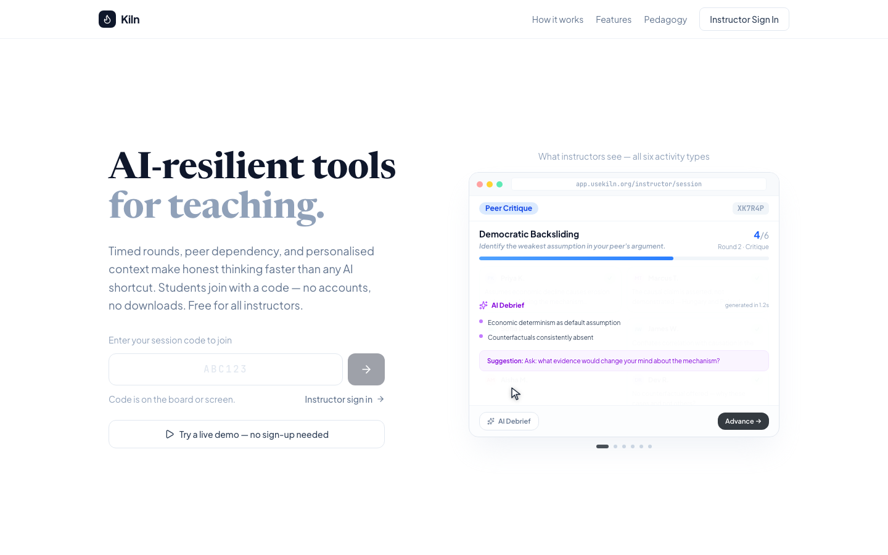
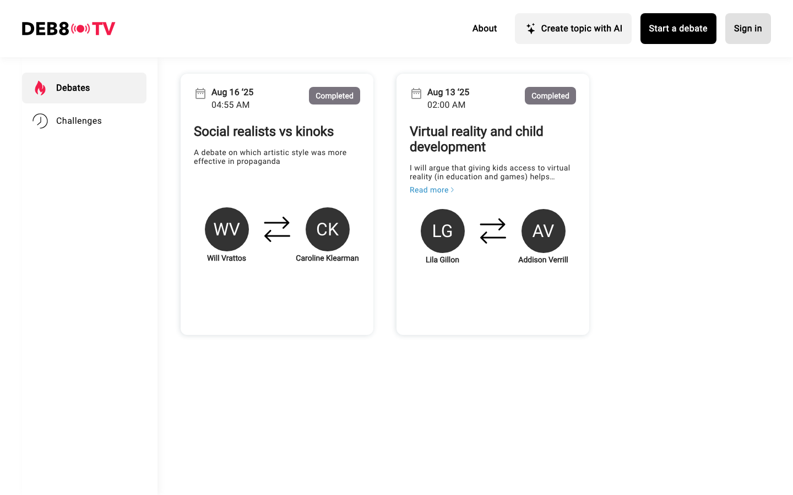

14 April 2026
Some unfiltered thoughts — hopefully productive ones
The Student Reality
First drafts, outlines, paraphrasing, grammar checks. For many students, ChatGPT is the first stop before any assignment.
Summarising readings, finding sources, explaining concepts they missed in lecture. Faster than office hours.
Debugging, generating starter code, explaining error messages. AI is the default TA for quantitative coursework.
The risk: Students learn to produce polished outputs without ever practising the thinking those outputs are supposed to represent.
The opportunity: If we redesign activities so that the cognitive work is the point — not the deliverable — AI becomes a partner instead of a shortcut.
First Principles
If we believe AI can fully replace scholarship, we are claiming there is nothing meaningfully human about inquiry that matters — nothing irreducible in creativity, curiosity, judgment shaped by lived experience, or moral imagination.
I think that's wrong. But I also think it's worth saying out loud, because a lot of people are quietly acting as if it's true.
First Principles
Predicts the next token from a training corpus. No stakes. No accountability. No life in which the inquiry matters.
Driven by confusion, anger, curiosity. Revised because a colleague's objection wouldn't let you sleep. Signed with your name.
First Principles
The Right Division of Labour
Speed. Two million researchers across 190 countries now use it. Solved the protein-folding problem that resisted fifty years of effort.
The questions. The judgment. The stakes. Which proteins matter, why those structures are significant, what to do with the predictions.
Acceleration ≠ replacement. As AI gets more capable, it does not make judgment obsolete. It raises its price.
The Thesis
Especially now that both are cheap.
Building AI-Resilient Teaching
Banning AI is obviously not going to work. Pretending it doesn't exist is worse. So the design problem becomes: make real cognitive work easier to do than to outsource.
Kiln (usekiln.org) — timed rounds, peer dependency, and personalised context. Students join with a code. No accounts, no downloads. Free for all instructors.

Kiln
Construct a claim → Locate weakness in a peer's reasoning → Defend under scrutiny. Three rounds, one session.
AI reads each response and generates a follow-up targeting the gap in their reasoning. Every path diverges.
Reveal unseen evidence live. Students interpret cold, then find the inferential leap in a peer's reading. Highest AI resistance.
Name your own confusion — harder than it looks. Then explain a classmate's confusion in plain terms.
Negotiate with a single AI persona that adapts to your moves. No two students face the same exchange.
Face a cast of personas. An AI orchestrator routes each turn. Branching and impossible to outsource.
Kiln
deb8.tv / ai.deb8.tv
deb8.tv pairs students in real debates. ai.deb8.tv lets them spar with AI avatars — Dostoevsky, Diogenes, Simone de Beauvoir — in voice, in real time.
Argumentation under adversarial pressure. Think on your feet against an interlocutor who pushes back.
The passive "ask AI, copy the answer" loop. Here, AI is the opponent — not the ghostwriter.

From My Research
In a pre-registered experiment, GPT-4o engaged respondents in one-on-one dialogues grounded in their individual moral foundations.
Result: Significant increase in support across multiple attitudinal measures.
But: Follow-up one week later revealed notable attenuation. Gains may be transient without reinforcement.
AI can move attitudes — but durable change still requires the human institutions that sustain it.
Crabtree, Holbein, Bosley & Sevi. Conditionally accepted, PNAS Nexus.
Institutional Responses
First US university to require all undergraduates demonstrate AI working competency before graduating (class of 2030).
Two lanes: secure assessments that verify individual mastery, and open assessments that scaffold responsible AI use.
AI Fluency initiative — not just "how to prompt" but when to trust, when to verify, and when to refuse.
Where I've landed
Thank You
Senior Lecturer, School of Social Sciences, Monash University
usekiln.org
charles.crabtree@monash.edu · charlescrabtree.org